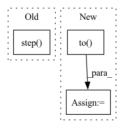

Pattern ID :26445

Before Change
optimizer_D_0.step()
lr_scheduler_D_0.step()
// update trade_off_module
trade_off_module.step()
batch_time.update(time.time() - end)
end = time.time()
After Change
domain_adv_D = DomainAdversarialLoss(D).to(device)
// define trade off scheduler
grl = WarmStartGradientReverseLayer(alpha=1, lo=0, hi=args.trade_off, max_iters=args.epochs * args.iters_per_epoch)
domain_adv_D_0 = DomainAdversarialLoss(D_0, grl=grl).to(device)
// parameters
optimizer_D = SGD(D.get_parameters(), args.lr, momentum=args.momentum, weight_decay=args.weight_decay, nesterov=True)
optimizer_D_0 = SGD(classifier_t.get_parameters() + D_0.get_parameters(), args.lr, momentum=args.momentum,
weight_decay=args.weight_decay, nesterov=True)
In pattern: SUPERPATTERN
Frequency: 4
Non-data size: 3
Instances
Fragment ID: 79291960
Project Name: thuml/transfer-learning-library
Commit Name: b18cba0c0062d1eb8871fc0435500074063eb88a
Time: 2021-01-17
Author: chenbx18@mails.tsinghua.edu.cn
File Name: examples-da/partial/importance_weighted_adversarial_nets.py
M Class Name: AnonimousClass
N Class Name: AnonimousClass
M Method Name: train(9)
N Method Name: train(9)
M Parent Class:
N Parent Class:
M File Name: examples-da/partial/importance_weighted_adversarial_nets.py
N File Name: examples-da/partial/importance_weighted_adversarial_nets.py
M Start Line: 199
M End Line: 289
N Start Line: 200
N End Line: 271
'>
Before Change
def forward(self, g_s, f_s, g_t, f_t):
trans_loss_s, domain_acc_s = self._single_domain_forward(g_s, f_s, domain=1)
trans_loss_t, domain_acc_t = self._single_domain_forward(g_t, f_t, domain=0)
self.grl.step()
self.domain_discriminator_accuracy = 0.5 * (domain_acc_s + domain_acc_t)
return 0.5 * (trans_loss_s + trans_loss_t)
def _single_domain_forward(self, logits, features, domain=1):
After Change
g = F.softmax(g,dim=1).detach()
h = self.grl(self.map(f, g))
d = self.domain_discriminator(h)
d_label = torch.cat((
torch.ones((g_s.size(0), 1)).to(g_s.device),
torch.zeros((g_t.size(0), 1)).to(g_t.device),
))
weight = 1.0 + torch.exp(-entropy(g))
'>
Fragment ID: 79291951
Project Name: thuml/transfer-learning-library
Commit Name: 8477111b23336e7dd2d349a4b35b969240ff5871
Time: 2020-04-12
Author: 13126830206@163.com
File Name: dalib/adaptation/cdan.py
M Class Name: ConditionalDomainAdversarialLoss
N Class Name: ConditionalDomainAdversarialLoss
M Method Name: forward(5)
N Method Name: forward(5)
M Parent Class: nn.Module
N Parent Class: nn.Module
M File Name: dalib/adaptation/cdan.py
N File Name: dalib/adaptation/cdan.py
M Start Line: 86
M End Line: 90
N Start Line: 87
N End Line: 100
'>
Before Change
def forward(self, g_s, f_s, g_t, f_t):
trans_loss_s, domain_acc_s = self._single_domain_forward(g_s, f_s, domain=1)
trans_loss_t, domain_acc_t = self._single_domain_forward(g_t, f_t, domain=0)
self.grl.step()
self.domain_discriminator_accuracy = 0.5 * (domain_acc_s + domain_acc_t)
return 0.5 * (trans_loss_s + trans_loss_t)
def _single_domain_forward(self, logits, features, domain=1):
After Change
g = F.softmax(g,dim=1).detach()
h = self.grl(self.map(f, g))
d = self.domain_discriminator(h)
d_label = torch.cat((
torch.ones((g_s.size(0), 1)).to(g_s.device),
torch.zeros((g_t.size(0), 1)).to(g_t.device),
))
weight = 1.0 + torch.exp(-entropy(g))
batch_size = f.size(0)
'>
Fragment ID: 79291950
Project Name: thuml/transfer-learning-library
Commit Name: 6dfc8e293ca2cbc4d116dc8ed0a6ef176dff0d06
Time: 2020-04-12
Author: 13126830206@163.com
File Name: dalib/adaptation/cdan.py
M Class Name: ConditionalDomainAdversarialLoss
N Class Name: ConditionalDomainAdversarialLoss
M Method Name: forward(5)
N Method Name: forward(5)
M Parent Class: nn.Module
N Parent Class: nn.Module
M File Name: dalib/adaptation/cdan.py
N File Name: dalib/adaptation/cdan.py
M Start Line: 86
M End Line: 90
N Start Line: 87
N End Line: 100
'>
Before Change
loss = F.nll_loss(emb[batch.node_label_index],
batch.node_label[batch.node_label_index])
loss.backward()
optimizer.step()
def test():
model.eval()
After Change
device="cpu"):
model_cls = GNN
model = model_cls(num_node_features, args.hidden_dim, num_classes, args).to(device)
opt = build_optimizer(args, model.parameters())
for epoch in range(args.epochs):
total_loss = 0
'>
Fragment ID: 79291955
Project Name: snap-stanford/deepsnap
Commit Name: 7bd48169aea6ac9922ecbb0a7b1fa88b3809586e
Time: 2020-10-26
Author: youjiaxuan@gmail.com
File Name: examples/node_classification_cora.py
M Class Name: AnonimousClass
N Class Name: AnonimousClass
M Method Name: train(7)
N Method Name: train(0)
M Parent Class:
N Parent Class:
M File Name: examples/node_classification_cora.py
N File Name: examples/node_classification_cora.py
M Start Line: 76
M End Line: 86
N Start Line: 120
N End Line: 145